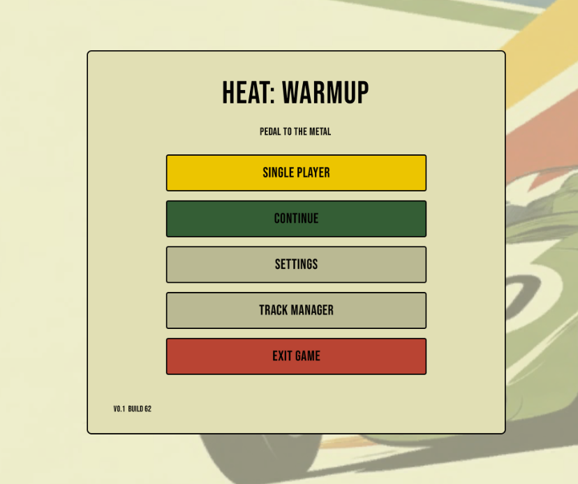
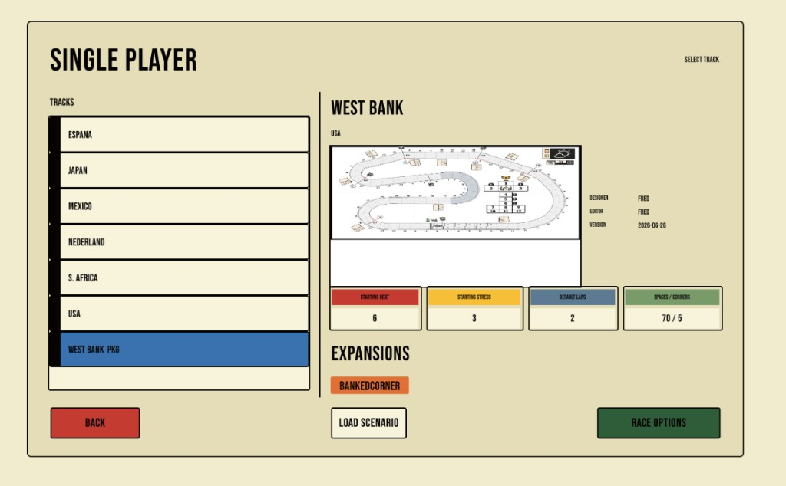
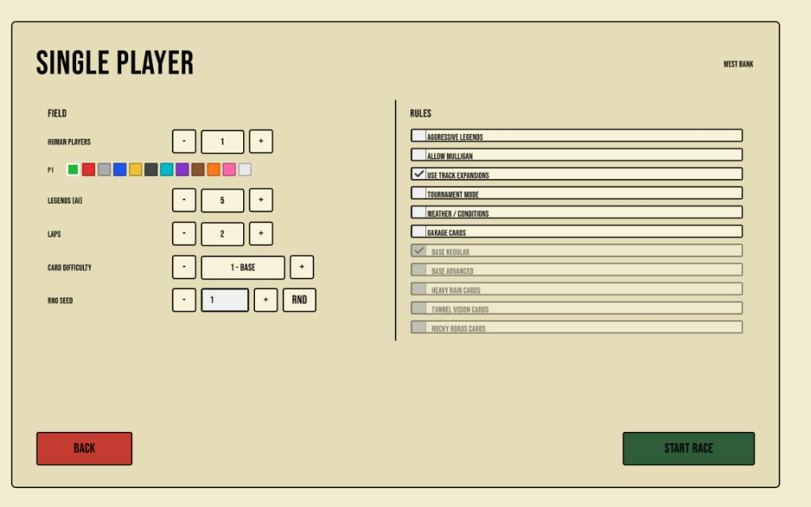
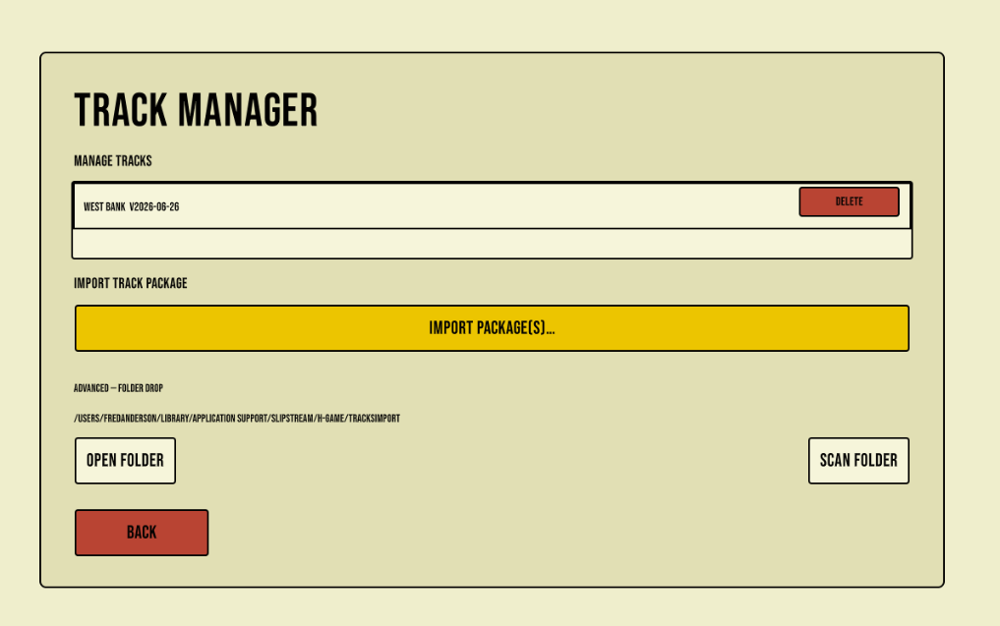
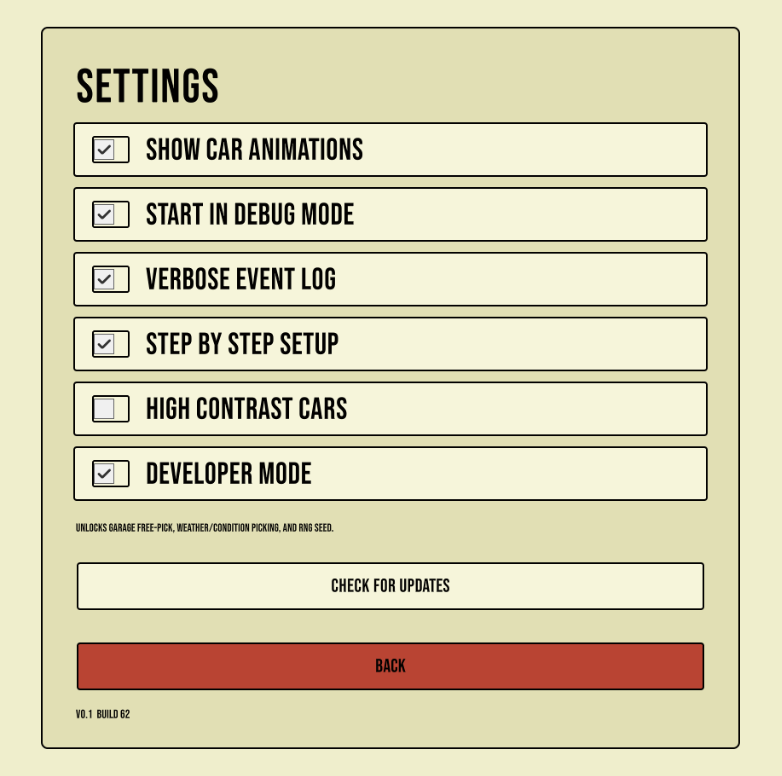

QUICK START
INSTALL & RACE
From first launch to the starting grid—plus every keyboard shortcut, mouse control, and a few tips for reading the board. This covers the app, not the official board-game rulebook.
01 / START
OPEN THE MAIN MENU
Choose Single Player to begin. Track Manager imports community track packages, and Settings changes how the app behaves.

02 / CHOOSE A CIRCUIT
SELECT A TRACK
Choose an installed circuit from the list. The preview shows its creator, version, starting Heat and Stress, default laps, space/corner count, and any enabled expansions.
Use Race Options when the selection looks right.

03 / SET THE RACE
RACE OPTIONS
Set the number of human players, Legends, laps, and Legends card difficulty. Enable expansion options only when you want them in the race.
RNG Seed is useful for repeatable testing. Developer-only options become available when Developer Mode is enabled.

04 / ADD COMMUNITY TRACKS
TRACK MANAGER
Download a track_*_v2_package.zip from the Track Library. In Track Manager choose Import Package(s) and select that ZIP. Keep the package intact.
Open Folder opens the alternate drop folder; after placing ZIPs there, choose Scan Folder.

macOS:
~/Library/Application Support/SlipStream/H-Game/TracksImport/Windows:
%APPDATA%\LocalLow\SlipStream\H-Game\TracksImport\
05 / PREFERENCES
SETTINGS
Show Car Animations controls movement animation. High Contrast Cars improves player-colour readability. Verbose Event Log adds more detail for troubleshooting.
Start in Debug Mode, Step by Step Setup, and Developer Mode are advanced testing tools. Developer Mode unlocks free-pick Garage, Weather/Condition picking, and RNG seed controls.
Use Check for Updates to see whether a newer Mac or Windows beta is available.

UPDATING
Game updates do not remove installed tracks. Track packages may be updated separately; importing a newer package version replaces the old installed version.
IN THE COCKPIT
CONTROLS & GAMEPLAY
Most of a round is click-driven: pick gear, select cards, then confirm. Keyboard shortcuts speed that up. The board itself is for looking—pan and zoom the camera; you don’t click cars on the track to play.
Mouse & camera
| Input | Action |
|---|---|
| Scroll wheel | Zoom in or out toward the cursor (disabled while the pointer is over a scrolling UI panel) |
| Right-drag or Middle-drag | Pan the board; cancels the camera’s smooth follow until it recenters on a move |
| Left-click cards & buttons | Select or deselect hand cards; choose gear; confirm phase actions; open react / slipstream / salvage choices |
| Hover Legends tab | Slide out the current Legends card (pin it with L) |
Keyboard shortcuts
| Key | Action |
|---|---|
| 1–4 | Shift: pick gear (gear dial needs Enter or Confirm; some layouts commit gear immediately). Play / Discard / tournament Shift: toggle that hand slot |
| 5–7 | Toggle hand cards in slots 5–7 during Play, Discard, or tournament Shift |
| Enter | Confirm the current action: shift, play, discard, MOVE, speed choice, React done, slipstream attempt, or board-setup PLACE. Also skips in-flight car move animations |
| Esc | Pause / resume overlay (save, load, settings, restart, quit race) |
| C | Center the camera on your car (keeps current zoom). While the event log is open, copies the log instead |
| E | Toggle the full event log |
| L | Pin / unpin the Legends card panel |
| Space | Hide or show all UI canvases for a clean board view. During step-by-step board setup, also confirms PLACE |
| # | Cycle space labels: indices → corner countdowns → hidden |
| D | Toggle gameplay debug overlays (center line, corners, conditions, and related markers) |
| B | Toggle track background tiles |
Numpad keys match 1–7 and Enter. Hold Shift when typing # so you don’t also select a gear or card.
Event log (while open)
| Key | Action |
|---|---|
| E | Close the log |
| C | Copy the full log to the clipboard |
| S | Save the log as a .txt file in the app’s data folder |
How a round flows
- Shift — Choose gear 1–4. Grey shifts are free; red costs Heat; orange warns that your hand is cluttered. Use ← Change Gear if you still can undo.
- Play — Select exactly as many cards as your current gear, then confirm. Number keys toggle slots; click works the same way.
- Reveal / MOVE — Press MOVE ▶ or Enter, resolve any speed choices, then watch cars advance. Enter again skips move animations if they’re still playing.
- Adrenaline / mandatory Heat — When prompted, pick a bonus (+1 Speed, Cooldown, or Ignore) or which Heat card to sacrifice.
- React — Resolve mandatory then optional reactions (including Direct Play from hand). Enter finishes React after a short debounce so it doesn’t steal the previous MOVE press.
- Slipstream — If you’re directly behind another car, attempt or decline. Enter on the panel attempts slipstream.
- Discard — Optional cleanup unless you’re in a tunnel (then you must keep your hand). Confirm or use KEEP ALL.
Gameplay tips
- Cluttered hand: if you don’t have enough playable cards for your gear, the car doesn’t move and gear resets to 1st—watch for the warning before you confirm.
- Mulligan: at the start of a round you can pay 1 Heat to redraw seven cards.
- Tunnel spaces: discard is blocked; use the tunnel keep-all control instead of trying to pitch cards.
- Legends: hover or pin with L so you can see the AI card that just came out without leaving your hand.
- Event log: open with E when something surprising happened; Verbose Event Log in Settings adds more detail.
- Camera follow: the view eases toward the active human after moves. Pan manually anytime; press C to jump back to your car.
- Board setup: with Step by Step Setup on, the walkthrough pans to each weather/token spot—confirm with PLACE, Enter, or Space, or skip the rest.
- Pause menu: Esc for save/load mid-race, settings, restart, or quit without closing the whole app.
- Reading the track: use # for space numbers or corner countdowns, and D when you want debug lines and condition markers visible.
- This is not the rulebook: for official Heat rules, use the commercial game materials. This sandbox is for trying lines, packages, and strategy—not a substitute for the published rules.